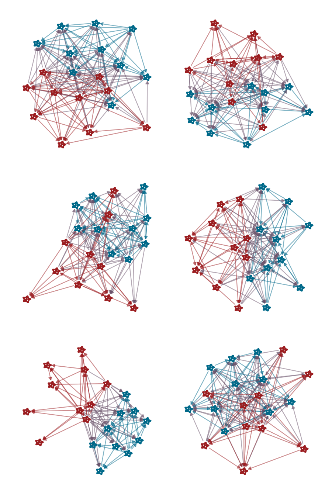

Matt Michalska-Smith
Lindsey Otto-Hanson, Georgiana May
Elizabeth Borer, Eric Seabloom
Linda Kinkel
Experiment overview
Network analysis
Summary / Conclusions
Control
NPK+ Supplemented
Control
NPK Supplemented
Experiment overview
Network analysis
Degree distributions
Network structures
Triads
Summary / Conclusions
Interaction Type
NPK Supplemented
Control
T-test p-value
KS-test p-value
Bacteria → Bacteria
0.661
0.659
0.896
0.116
Bacteria → Fungi
0.494
0.408
< 0.001
< 0.001
Fungi → Bacteria
0.731
0.831
< 0.001
< 0.001
Fungi → Fungi
0.656
0.724
< 0.001
< 0.001
Treatment
Interaction Type
Formula
p-value
Adjusted $R^2$
Control
Bacteria → Any
indegree ~ 19.252 · outdegree - 0.508
< 0.001
0.767
Bacteria → Bacteria
indegree ~ 9.467 · outdegree - 0.597
< 0.001
0.743
Bacteria → Fungi
indegree ~ 10.072 · outdegree - 0.449
< 0.001
0.733
Fungi → Any
indegree ~ 19.996 · outdegree - 0.649
< 0.001
0.623
Fungi → Bacteria
indegree ~ 10.582 · outdegree - 0.79
< 0.001
0.511
Fungi → Fungi
indegree ~ 9.991 · outdegree - 0.558
< 0.001
0.643
NPK Supplemented
Bacteria → Any
indegree ~ 17.442 · outdegree - 0.385
< 0.001
0.546
Bacteria → Bacteria
indegree ~ 8.765 · outdegree - 0.474
< 0.001
0.589
Bacteria → Fungi
indegree ~ 8.839 · outdegree - 0.31
< 0.001
0.369
Fungi → Any
indegree ~ 18.355 · outdegree - 0.569
< 0.001
0.673
Fungi → Bacteria
indegree ~ 8.676 · outdegree - 0.512
< 0.001
0.471
Fungi → Fungi
indegree ~ 9.546 · outdegree - 0.617
< 0.001
0.772
Term
df
sum squared error
mean squared error
p-value
treatment
1
3.989
3.989
0.419
interaction_type
3
150.053
50.018
< 0.001
treatment:interaction_type
3
6.4
2.133
0.789
Residuals
432
2636.528
6.103
Adjusted $R^2$
0.04209
Control
NPK Supplemented

Comparing isolate kingdoms
Comparing network treatments
Comparing network treatments — Triad counts
Comparing network treatments — against random
Triad counts — against random
Experiment overview
Network analysis
Summary / Conclusions
Kingdom comparisons
Treatment comparisons
Take-home
Comparing Kingdom
Degree distributions differ significantly between interaction types
in particular, fungi tend to have a larger impact on bacteria than vice versa (especially for control plants)
Isolates cluster by kingdom
especially in weighted networks (though more noticeable in binary!)
Bacteria and fungi differ in their node-specific structure only in control plants
Comparing Treatment
Degree distributions also differ significantly beween treatments
But...
There are few / weak differences in network-wide structure between treatments
(Binary) networks show many significant deviations from their random expectations
but these differences tended to be small
Conclusions
Nutrient ammendments level the playing field
Fungi tend to have wider niches and greater overlap on bacterial isolates
But these differences are attenuated in NPK plants
Despite pairwise differences, differences not visible in larger network structure
These small resource competition networks seem to be dominated by pairwise effects
No evidence of higher-order interactions
Thank you!